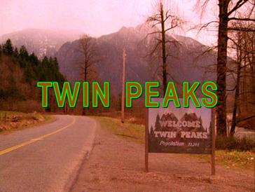

Twin Peaks

Characters in Twin Peaks
Character
Actor
Seasons/Films they appear in
Dale Cooper
Kyle MacLachlan
1, 2, 3, FWWM
Bobby Briggs
Dana Ashbrook
1, 2, 3, FWWM
Harry S. Truman
Michael Ontkean
1, 2
Laura Palmer
Dale Cooper
Audrey Horne
Bob
Bobby Briggs
Shelly Johnson
Norma Jennings
James Hurley
Rotten Tomatoes Ratings for each season/film
Season 1
Season 2
Twin Peaks: Fire Walk with Me
Twin Peaks: The Return